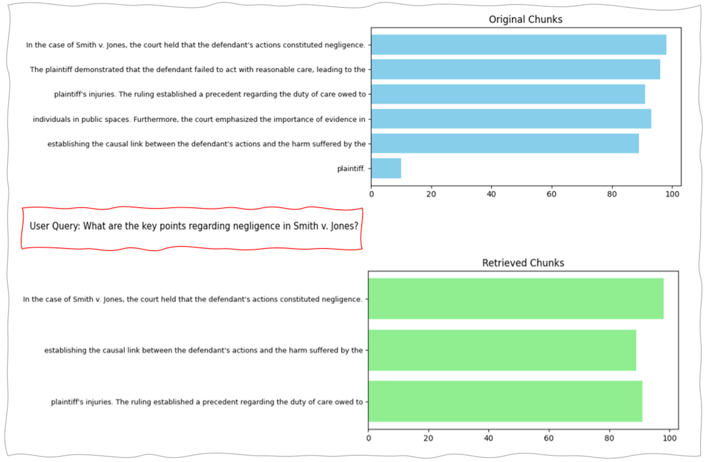

Use Cases
Case Law Research (Legal)
Breaking down complex case law into simpler parts for easier interpretation and retrieval.
Patient Education (Health)
Tailoring educational materials into digestible parts for patients based on their specific conditions.
Regulatory Compliance (Finance)
Organizing compliance documents into smaller parts to facilitate easier review and adherence to regulations.
Research Papers (Education)
Assisting students and researchers in digesting complex research by segmenting information into key themes or findings.
SEO Optimization (Media and Publishing)
Creating snippets or summaries of content to improve search engine visibility and user engagement.
RecursiveCharacter Chunking Code
Example of Recursive Chunking Result



Pros and Cons of Recursive Chunking
| Pros | Cons |
|---|---|
| Adjusts chunk boundaries dynamically based on the structure of the text, such as sentences and paragraphs. | More complex to implement than straightforward character-based splitting. |
| Preserves semantic coherence within chunks, making the content easier to understand. | Requires more computational resources due to the recursive nature of the process. |